Mengukur Jarak#
Kesamaan dan Ketidaksamaan#
Kesamaan
Mengukur secara numerik bagaimana kesamaan 2 objek
Tinggi nilainya bila benda yang lebih mirip
Range [0,1]
Ketidaksamaan
Ukuran numerik dari perbedaan dua objek
Sangat rendah bila benda yang lebih mirip
Minimum ketidaksamaan 0
Data Matriks dan Ketidaksamaan Matriks#
Data Matriks
n titik data dengan p dimensi
2 Mode
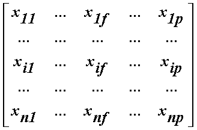
Ketidaksamaan Matriks
n titik data yang didata adalah distance/jarak
Matrik segitiga
1 Mode
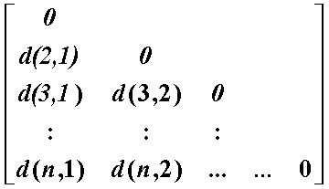
Mengukur jarak untuk atribut nominal#
Misal terdapat 2 atau lebih nilai, misall red, yellow, blue, green(generalisasi dari atribut binary)
Metode Simple Matching
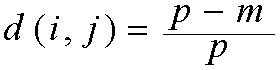
Mengukur jarak untuk atribut Binary#
Tabel kontingensi untuk data biner
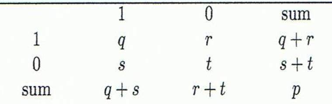
Mengukur jarak untuk variabel biner simetris
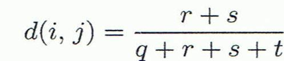
Mengukur jarak untuk variabel biner tidak simetris
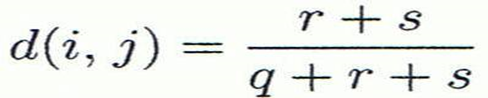
Jaccard coefficient(Kesamaan mengukur variable tidak simetris biner)
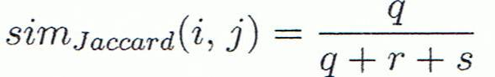
Jaccard coefficient sama dengan “coherence”:
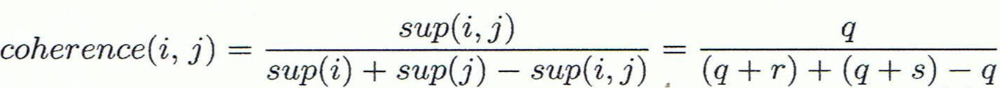
Contoh#
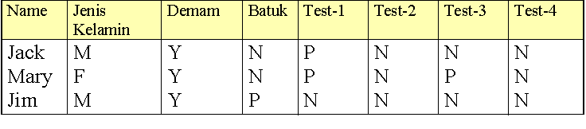
Jenis kelamin atribut simetris
Atribut lain adalah tidak simetris biner
Nilai Y dan P adalah 1, dan nilai N adalah 0
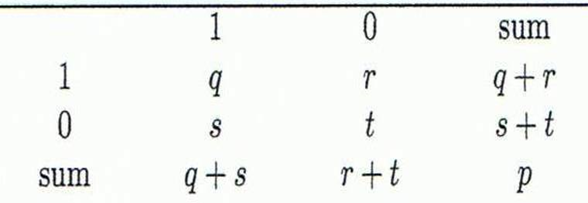
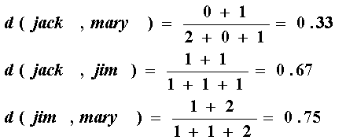
Atribut Ordinal#
Atribut ordinal dapat bernilai diskrit atau kontinu
Mengandung urutan/tingkatan, misal ranking
Dapat dinyatakan dengan type data interval-scaled
Gantikan x if dengan urutan rankingnya
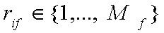
Petakan setiap nilai variable kedalam [0, 1] dengan menggantikan objek ke I dalam variable ke f dengan
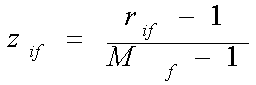
Hitung ketidaksamaan (disimilarity) dengan using method variable skala interval (numerik)
Standarisasi data Numeric(normalisasi)#
Z-score:
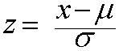
X: data yang akan dinormalissi, μ: mean , σ: standard deviation
Cara lain : Menghitung mean absolute deviation
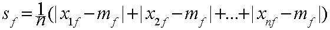
dengan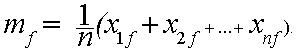
Ukuran standarisasi dengan (z-score):
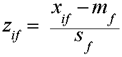
Dengan menggunakan mean absolute deviation lebih handal daripada menggunakan standart deviation
Contoh Data Matrik dan Ketidaksamaan Matrik#
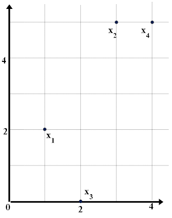
Data Matrik
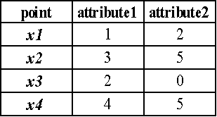
Ketidaksamaan Matrik(with Ecludian Distance)
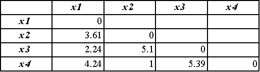
Jarak pada data Numerik : Minkowski Distance#
Minkowski :
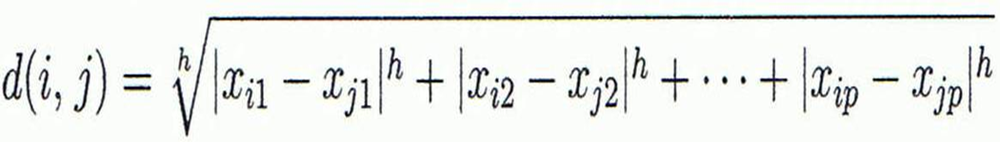
Dimana i= (xi1,xi2, …,xip) dan j= (xj1,xj2, …,xjp) dua objek dengan p dimensi data, dan h adalah pangkat (disebut juga dengan L-h norm)
Sifatnya
d(i, j) > 0 jika i ≠ j, dan d(i, i) = 0 (Positive definiteness)
d(i, j) = d(j, i) (Symmetry)
d(i, j) d(i, k) + d(k, j) (Triangle Inequality)
Special Cases of Minkowski Distance#
h = 1: Manhattan (city block, L1 norm) distance
Misal., the Hamming distance: Jumlah bit yang berbeda antara dua vektor biner
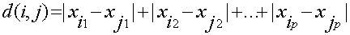
h = 2: (L2 norm) Euclidean distance
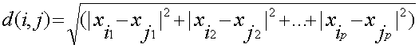
h –> ∞ “supremum” (Lmax norm, L∞ norm) distance.
Ini adalah selisih maksimum diantara atribut atributnyanya dalam suatu vektor
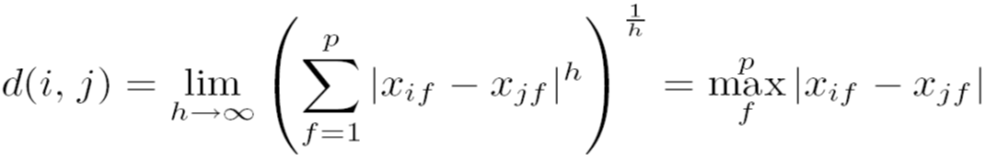
Contoh Minkowski Distance#
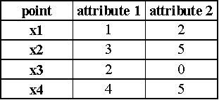
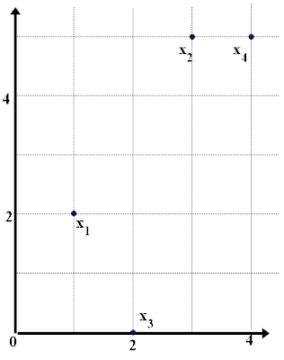
Ketidaksamaan Matrik
Manhattan (L1)
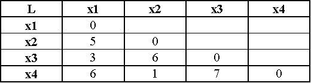
Ecludian (L2)
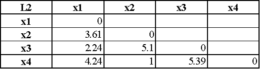
Supremum
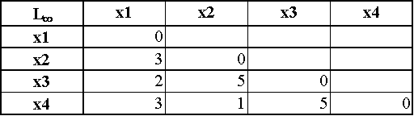
Atribut Campuran#
Database mungkin mengandung tipe campuran (semua tipe data ada (Nominal, symmetric binary, asymmetric binary, numeric, ordinal))
Kita dapat menggunakan pembobotan untuk menggabungkan
f adalah binary atau nominal: dij(f) = 0 if xif = xjf , atau j dij(f) = 1 untuk yang lainnya
Jika f adalah numerik: gunakan normalisasi
Jika f adalah ordinal
Hitung ranking rif dan
Cari zif sebagai skala interval